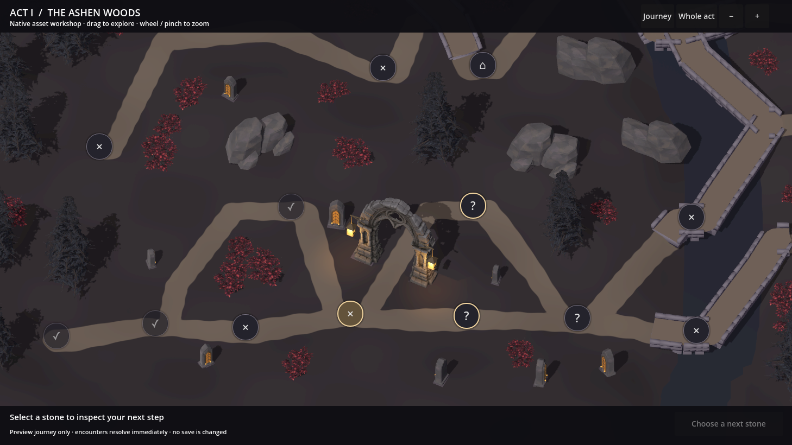
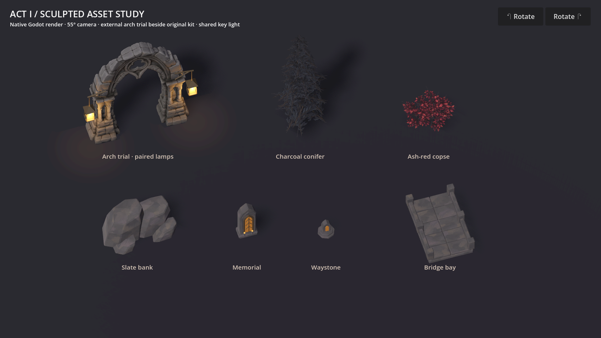
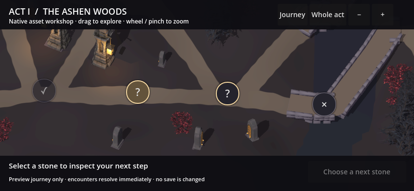
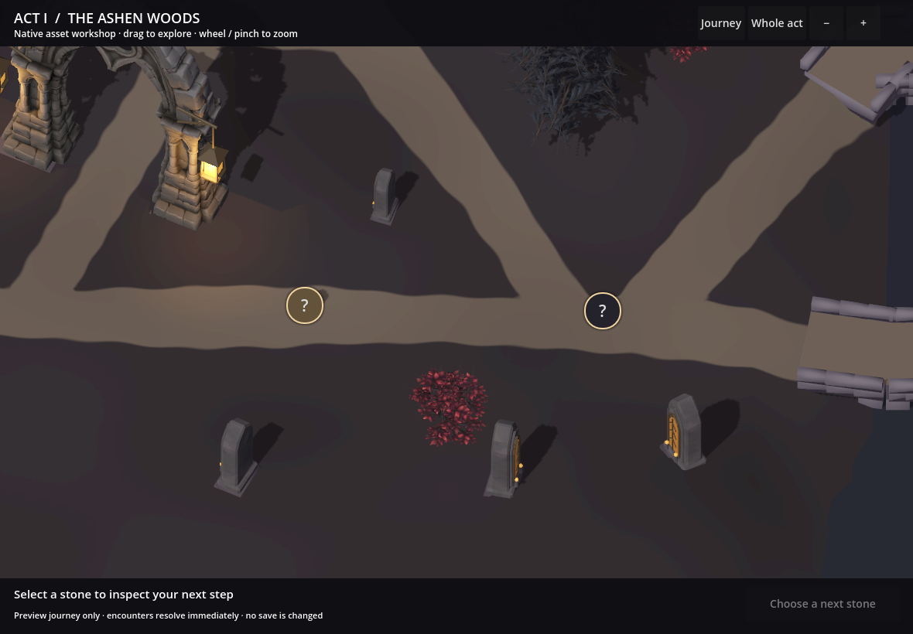
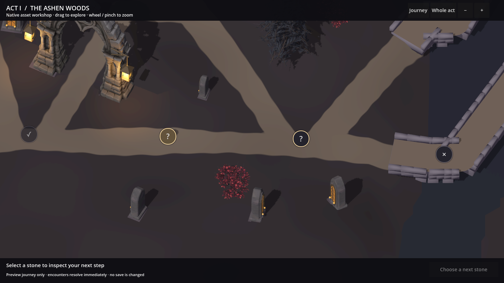

A fuller Ashen Woods.
The models are accepted. This revision responds to the smaller scenery scale and sparse placement: larger trees, bushes and stone masses, with the gateway kept at its previous size.
The comparison below uses the same native camera framing. Earth paths now belong to the terrain surface, with quieter colour and irregular edges.
Same viewpoint. More substantial scenery.
The gateway is unchanged in scale. Trees now use roughly 0.95–1.35× the authored model size, instead of 0.45–0.85×; larger bushes and rocks build out the surroundings. Placement prioritises the larger forms before filling the undergrowth.

Review focus: whether the surrounding landscape now has enough scale and presence, and whether the earth path feels more at home in it.
Turn the models around
An unretouched Godot recording, using the 55° map camera and shared dynamic lighting. The gateway includes its separately modelled lamps; all models turn through 360°.
Review focus: the substantial stone forms, the balance of broad surfaces and smaller details, and how the vegetation and amber accents belong to the same world.
The accepted language and its asset translation

{kind=link}

A passage on the generated route
The gateway follows a real compiled centreline. Its stone piers sit beside the road, with a memorial, rock bank and trees arranged nearby. All 65 nodes and 76 connections remain in the sample.
The route connections and node positions remain unchanged. Fuller land relief, detailed bridge assembly and integrated waystones remain part of the complete section production.
What happens after this review
The models are accepted. After this placement discussion, Step 4 continues assembling the finished playable section: terrain relief, banks, road wear, grounded bridges, deliberate vegetation groups, lighting and waystones. Step 5 checks the complete scene against the approved concept before expansion to varied layouts and the other acts.
Reference-shape and grounding checks
Native desktop renders at three reference dimensions pass drag, wheel zoom, node selection and legal preview travel. These captures show the resulting frame after the input exercise. They are desktop viewport checks; physical-device performance remains for later qualification.
{kind=link}

{kind=link}

{kind=link}

Contact heights were compared with 200 physics rays against the actual terrain mesh. The maximum difference is below 0.001 world units. Additional mesh probes confirm clearance across the gateway's route passage.